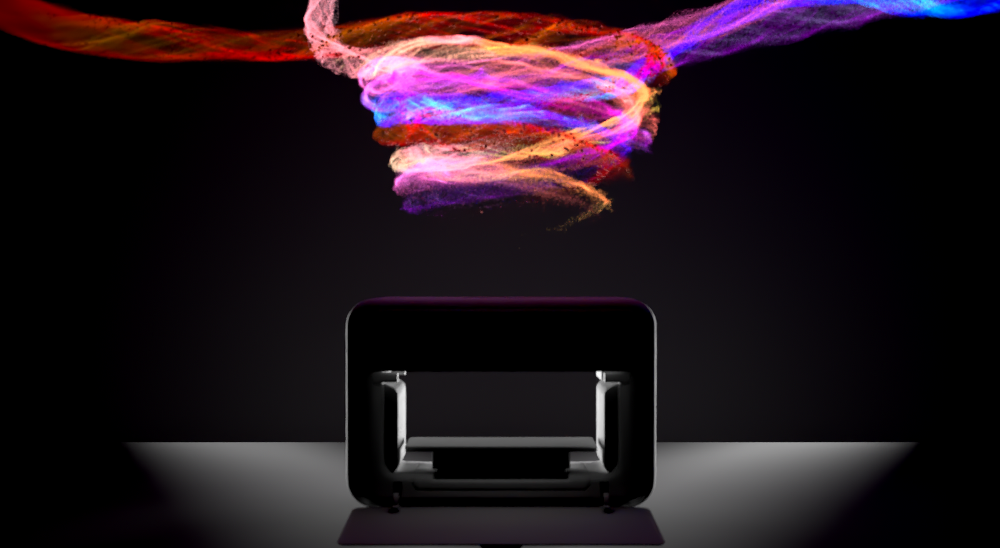
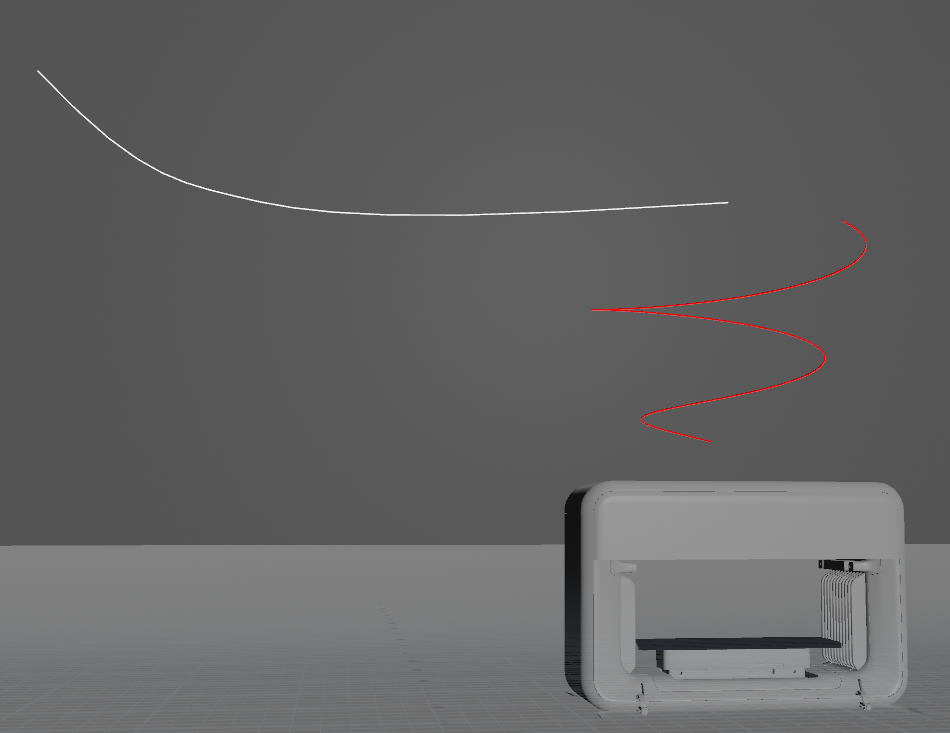
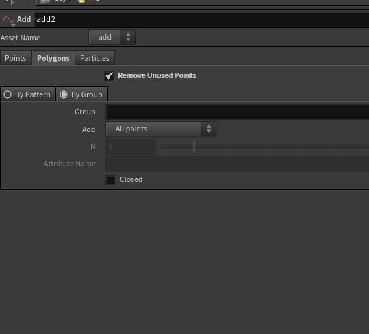
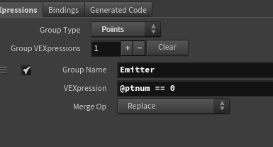
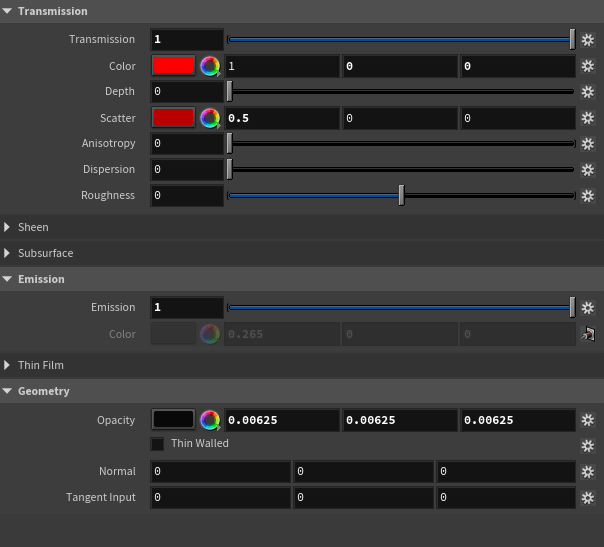
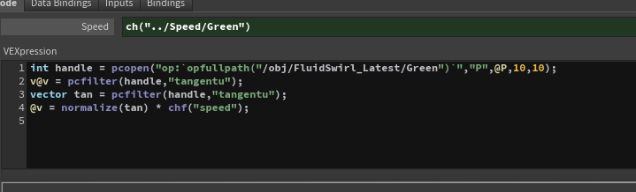
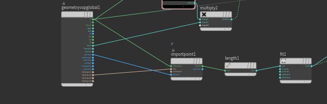
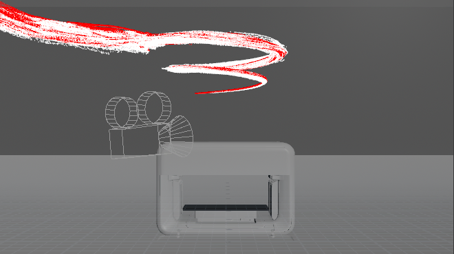
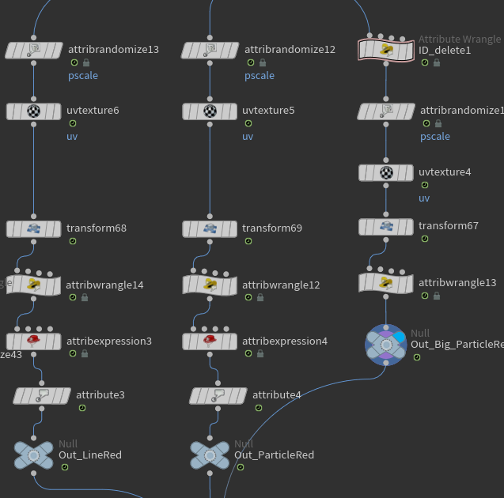

Week4
Team Member
Yiqi Zheng (Fx)
Riley Ho (Fx)
Itim Kongsakulvatanasook (Fx)
Sofia Mancias (Compositing)
Jan 31
Benji Hopkins (Look Dev)
SCAD X HARBOR X ETC - Week 4
Hello, this is my fourth week of the Scad x Harbor x ETC blog!
These are the mentors' feedback from Tuesday's presentation.
Kyle:
-
Shot 1:
-
The darker lighting direction works well.
-
Needs more time spent on look development.
-
Emission should come more from the environment, not from the object itself.
-
-
Shot 4:
- Continue refining lighting so the shot has stronger depth, similar to the references.
Beck：
-
Shots 3 & 5:
-
The particles in Shot 3 are not very clear.
-
The transition into Shot 5 should feel more intentional, moving clearly from dry to fluid.
-
-
Shot 6:
-
Consider adding more elements flying around to increase visual interest.
-
To-Do List:
-
Refine the particles’ path and flow shape (Create noise)
-
Work on refining the particles' material
As discussed in the group, we decided to switch from fluid to particles when the six colors swirl together to achieve better results and a stronger visual aesthetic. Below are the references I will be using.


Totally, I tried three different methods to achieve it, one is follow the tutorial.
First, I use Dopnet + POPCurveForce, I get the best result at least for me.

Based on my work over the previous weeks, I found a more procedural approach to defining emitters and connecting two curves. I started with a spiral and drew a second curve as a guide coming from off-screen. In my earlier method, I used a Fuse node to connect the two curves, but whenever I adjusted the spiral parameters (such as turns or height), I had to manually move the guide curve so that Fuse could detect the nearest points, which was inefficient and cumbersome.
In my current setup, I replaced this with an Add node, which automatically connects the curves without requiring manual repositioning.


Another issue, as I mentioned before, is that whenever I change the spiral parameters or move the drawn curve, I also have to manually translate the emitter so that it stays at the start of the curve. To solve this, I now use the curveu attribute to locate the start point of the curve (point 0), select that point, and use Copy to Points to generate the emitter. This way, no matter how the curve is modified or moved, the emitter always follows the curve automatically.



This is my Setup in DOP Net.
I also try to use the velocity attribute to drive both brightness and streak length, with higher velocities producing brighter and longer streaks. (Not successful yet)


For the material setup, I read the Cd attribute from the SOP level, enabled transmission, and controlled opacity using different grayscale values from the geometry.
Second, I used a POP Net and a POP Wrangle (From Professor Fowler) to make the particles follow the curve by sampling adjacent points around each particle using pcopen, averaging the curve’s tangent with pcfilter, and then setting the particle velocity along that normalized tangent (scaled by a speed parameter). However, I’m not sure how to continue from here to add controllable noise—both inside the stream and along the edges. Here is the result I got.

Third, I found two tutorials. One uses Path Deform to deform vertical lines along a guide curve, and the other focuses on creating noise or disturbance on a surface. I combined these two approaches. This is the result I got. (I don't like the shape I created here) The benefit of this approach is that it can be applied to any curve.


I tried to use the original point positions to calculate a distance-based mask, so the disturbance is applied based on this mask.
I started by creating several vertical lines and then Uses a box to define a region, groups geometry inside it, and deletes the selected elements. Here use attributevop to disturb the lines. (I used ChatGPT to help me build the basic logic and structure.)

This setup uses curl noise to offset point positions.
P_new = P + (noise * mask)
The next step is to generate a mask that selectively disables certain segments
Then, I use a POP network to generate particles and add noise to them.


I used ChatGPT to help me understand and write a wrangle that controls particle disabling through parameters.
Then, I used Path Deform to have the geometry follow the curve, and used keyframes to make sure the animation aligns properly.


Here, I used the Split node to separate different layers, which allows the flow to have more variation. I think this method can be integrated with my first approach to generate additional variants.

So, I think I will go with the first method and try to create additional variants using techniques I learned from other tutorials.
-
Refine the path (add variants for the particles)
-
Improve the material of the particles